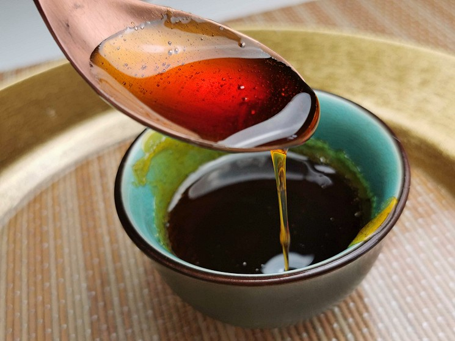
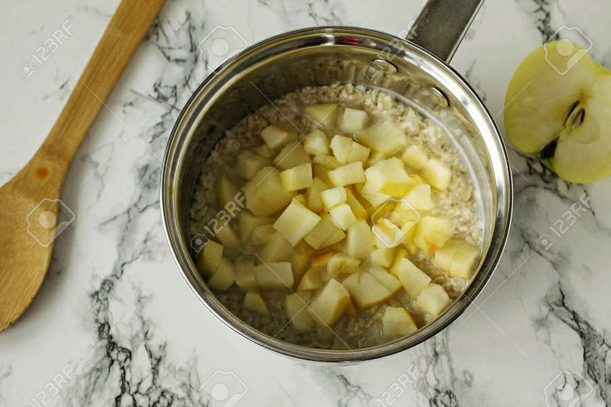
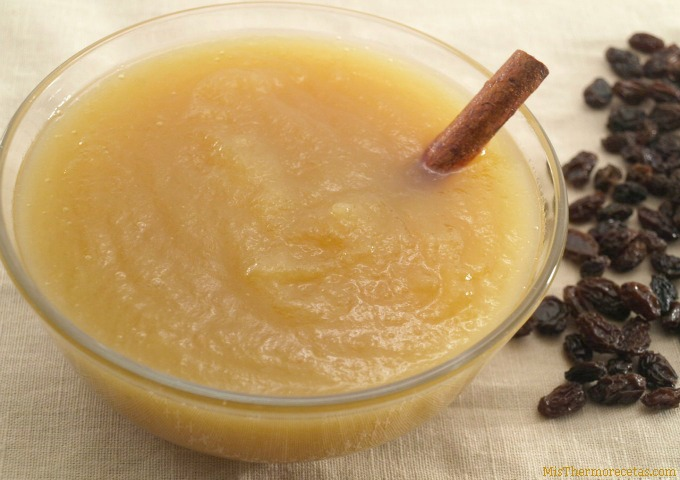
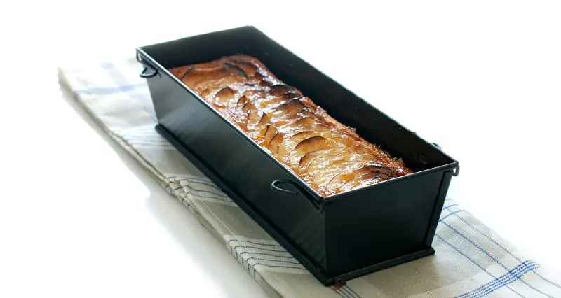
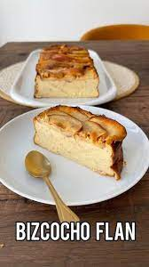
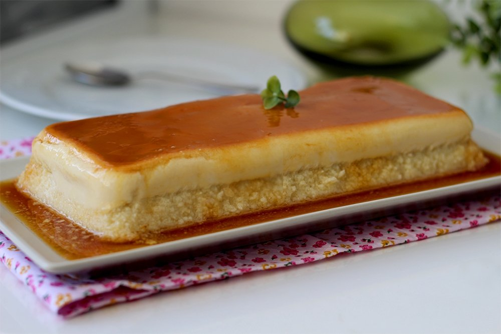

Regreso a menú
Flan de manzana
Índice:
Ingredientes (6 personas)
- 4 manzanas.
- 1 vasito de vino blanco.
- 3 huevos.
- 150 ml de leche.
- 75 g de azúcar.
Para el caramelo:
- 5 cucharadas de azúcar.
- Unas gotas de zumo de limón.
Paso a paso
- Prepara el caramelo. Pon el azúcar en un cazo con 1 cucharada de agua y el zumo de limón. Caliéntalo
hasta obtener un caramelo claro y repártelo en 6 flaneritas.

- Pela las manzanas, pártelas en cuartos, descorazónalas y córtalas en dados. Cuécelos con el vino, a fuego muy
lento, 15 minutos. Escúrrelos y espera a que se templen. Reserva una parte para decorar y tritura el resto.

- Bate los huevos con el azúcar y la leche. Mézclalos con el puré de manzana y reparte esta preparación en las
flaneras.

- Cuécelas durante 45 minutos, al baño María, en el horno precalentado a 180º.

- Deja enfriar los flanes, desmóldalos en platos de postre y sírvelos con los dados de manzana.

Resultado final
El flan es uno de los postres más tradicionales y que más gustan en nuestro país. Aunque el más típico es el de huevo,
existe el de vainilla, café y por supuesto este delicioso flan de manzanas que tan solo contiene 165 kcal. Además, nos da
carbohidratos y vitamina A.

Regreso hacia arriba